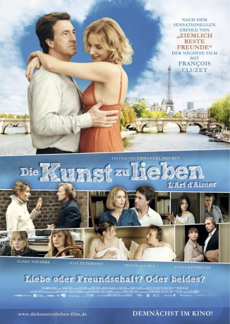

#4617 Die Kunst zu lieben
Alternativ: The Art of Love (Englischer Titel)
 
 IMDB-Wertung: 6.2 / 10
IMDB-Wertung: 6.2 / 10  Metascore: 0
Metascore: 0 
Pariser Singles und Paare begeben sich auf die Suche nach einem passenden Pendant - sei es nur für einen flotten Seitensprung oder für die Ewigkeit. Dabei reden alle unablässig von hemmungslosem Sex und trauen sich doch nicht so richtig aus der Deckung. Sie hadern mit ihren Gefühlen und tappen ungeschickt in alle Beziehungsfallen, sobald die Hormone das Hirn ausschalten. Zwischen Treue und Untreue, Lust und Last der Liebe versuchen Männlein und Weiblein mit mehr oder minder Erfolg, sich durchzulavieren.
Jahr: 2011
Dauer: 85 Minuten
FSK:
Land: Frankreich Studio: Camino FilmverleihTonspuren:
Untertitel: Deutsch,
Auflösung: 1080p (1920x1040) Größe: 6666 MB
Genre: Komödie, Liebe
Regisseur: Emmanuel Mouret
Drehbuch: Michael Roesch
Soundtrack:
Darsteller:
- Emmanuel Mouret als Louis
 Pascale Arbillot als Zoé
Pascale Arbillot als Zoé Ariane Ascaride als Emmanuelle
Ariane Ascaride als Emmanuelle Frédérique Bel als La voisine d'Achille
Frédérique Bel als La voisine d'Achille François Cluzet als Achille
François Cluzet als Achille- Julie Depardieu als Isabelle
 Judith Godrèche als Amélie
Judith Godrèche als Amélie- Stanislas Merhar als Laurent
 Élodie Navarre als Vanessa
Élodie Navarre als Vanessa Gaspard Ulliel als William
Gaspard Ulliel als William- Michaël Cohen als Le mari de Zoé
 Louis-Do de Lencquesaing als Ludovic
Louis-Do de Lencquesaing als Ludovic Philippe Magnan als Paul
Philippe Magnan als Paul Laurent Stocker als Boris
Laurent Stocker als Boris- Mélanie Chaney als Annabelle
- Camille Bardery als Elisabeth
- Paule Pagliano als Femme couple concert Laurent
- Jean-Pierre Pagliano als Homme couple concert Laurent
- Emilie Bourlès als Femme au dos nu
- Jean-Michel Dagory als Le mendiant
- Jade Nguyen als La femme de ménage d'Achille
- Olivier Brochart als Le facteur
- Guillaume Ferrandez als Le serveur café Emmanuelle
- Grégory Le Fourn als Serveur café Vanessa et William
- Aurélie Bouix als Amie Ludovic & Amélie
- Jean-Louis Levasseur als Ami Ludovic & Amélie
- Jean-Louis Padis als Ami Ludovic & Amélie
- Marie Coulonjou als Femme couple clients Amélie
- David Tissot als Homme couple clients Amélie
- Aurélia Alcaïs als La femme de ménage de l'hôtel
Datei: X:\2011(G-M)\Kunst zu lieben, Die (2011, FSK, 1920x1040).mkv seit 24.10.2016
Festplatte: HD 2011(G-Z)
 Es gibt insgesamt 100 Filme in der Gruppe '2011(G-M)'
Es gibt insgesamt 100 Filme in der Gruppe '2011(G-M)'